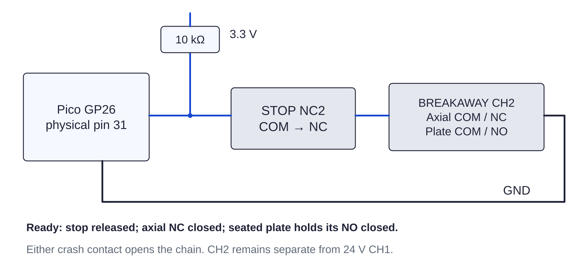

Controller / stop125 / 179
Land the logic stop
The operator stop and seated gun crash contact both carry 3.3 V logic in this chain. Either reports a stop even when USB remains powered.
AddSTOP NC2 + BREAKAWAY CH2 → GP26 / GND · one 10 kΩ pull-up
Tools / setupPower unplugged · continuity meter

- Route GP26 → STOP NC2 → BREAKAWAY CH2 → GND; add the 10 kΩ pull-up to 3.3 V.
- Wire CH2 axial COM/NC → plate-presence COM/NO. Meter continuity only with stop released, axial pod neutral and plate fully seated.
- Verify no NC2 terminal has continuity to adapter +, relay COM or relay NO.
- Leave uninstalled crash terminals open; preserve electrically separate CH1/CH2 routes through the removable mount.
Ready when
Axial travel and removal of the plate each open both independent crash channels; STOP also opens both chains. No logic terminal reaches 24 V positive. Any 24 V route into NC2 can destroy GPIO26. Keep power disconnected and separate the two contact blocks before continuing.